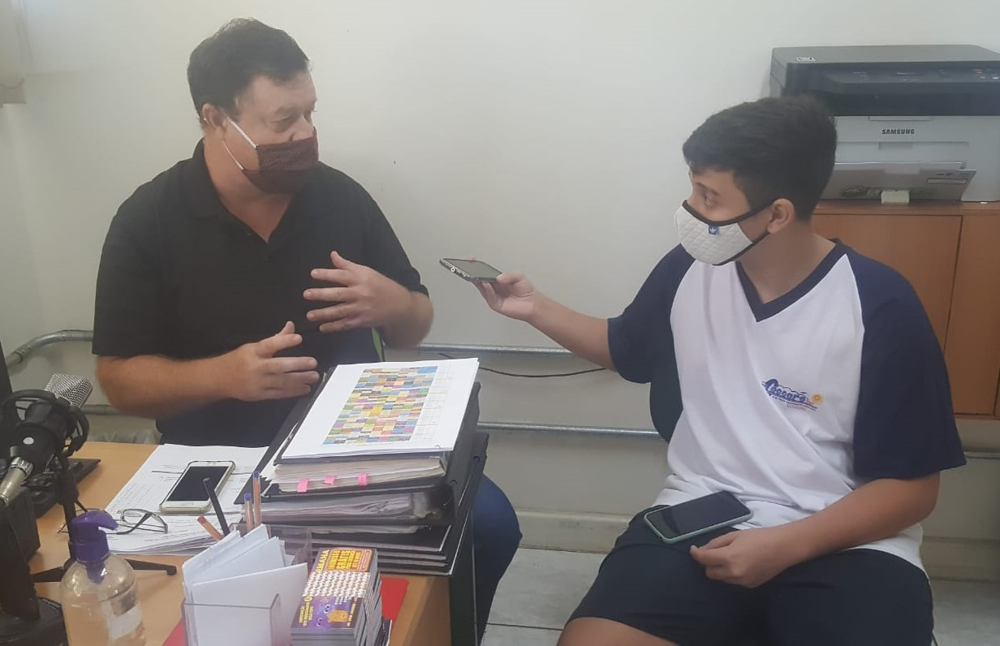

Responsaveis do Coccaro contam um pouco sobre a escola e suas carreiras
Em entrevista ao diretor Fred da Escola Francisco Coccaro, feita no dia 4 de novembro de 2021, fizemos algumas perguntas sobre o gerenciamento da escola, a historia dele na rede de ensino e dificuldades que ele passou para se adaptar com a escola. As perguntas e respostas feitas estão logo abaixo.

Quando você começou a trabalhar na rede estadual de ensino?
"Faz 4 anos. Eu prestei um concurso, passei no concurso e fui trabalhar na escola Élzide Celestina, trabalhei 3 anos lá e vim para o Coccaro. Estou achando a escola muito gostosa, muito tranquila e até agora estou aprendendo muito. Eu vim anteriormente de escola particular e lá as coisas eram muito rápidas, enquanto em escola pública as coisas caminham um pouco mais lento."
Quando a escola foi inaugurada?
"Faz muito tempo, eu não lembro exatamente mas acho que foi em 1958."
Dês de quando você é o diretor? Quantos já tiveram antes de você?
"Eu sou o diretor aqui a 8/9 meses, eu entrei em fevereiro. Foram muitos antes de mim, eles às vezes pedem remoção, são de outras cidades... enfim, foram incontáveis diretores. Essa informação eu não posso te dar mas foram muitos."
Quais foram seus maiores desafios para fazer a escola funcionar?
"Eu não tive desafio nenhum, quando eu cheguei aqui ela estava "redondinha" e com muitos equipamentos tecnológicos para que vocês pudessem aprender com mais facilidade. Atualmente estamos recebendo muita verba para comprar outros equipamentos tecnológicos, se vocês verem, uma sala já esta com lousa digital e outras salas estão para ser instaladas hoje, então, a escola estava "redondinha" e estava nas mãos do professor Siqueira e a dona Crislaine, eles fizeram um maravilhoso papel. A escola esta acima da média de todas as outras da cidade de Sorocaba, então, o meu papel aqui é não atrapalhar o que já estava dando bem, eu estou atrapalhando o mínimo possível e ajudando no que for necessário."
Em relação ao inicio da escola, comparando com 2018, vem ocorrendo crescimento pela procura de matriculas de alunos, bem como de funcionarios?
"Há muito tempo atrás eu não sei como era a procura, provavelmente era grande, porque foi a primeira escola do bairro, então provavelmente a procura era grande. Em 2018 até agora, teve uma queda, a 4 anos atrás teve uma queda, a população não estava percebendo que a escola era acima da média e o número de alunos caiu. Agora em 2020/2021 os alunos perceberam que a escola é diferenciada, que é uma escola muito boa, que ela esta no caminho correto e a procura começou a aumentar muito, principalmente que agora a maioria das escolas é período integral, e os alunos que trabalham não estão se adaptando as PEI, então a nossa escola esta com uma procura muito grande devido a isso. A escola PEI é muito boa para o aluno que quer entrar na faculdade, porque a escola consegue dar um apoio maior e ficar mais tempo na escola é muito bom, só que muitos alunos tem a necessidade de trabalhar mais cedo do que deveriam, então a nossa escola esta tendo uma procura muito grande porque ela não é PEI."
Aentrevista com o vice-diretor Siqueira, feita no dia 10 de novembro de 2021, perguntamos sobre questões escolares, mudanças que ocorreram na escola e perguntas sobre a carreira dele.
Porque a escola não tem mais período noturno ?
"É um solução do governo de eliminar o ensino noturno, porque no ensino diurno tem mais horas de aula então eles acham que os alunos aprendem mais e tem mais tempo para vir na escola, e como esta essa progressão continuada, pela idade e série o aluno ainda não esta trabalhando."
O que a escola vem melhorando ao longo dos anos?
"Nós melhoramos a infra-estrutura da escola, nós temos mais tecnologia, mais livros, mais espaço para vocês aprenderem, as salas de aula tem televisão, data show, tem lousa digital, microfone, computador... Então deu uma melhorada nesse sentido."
Por que não tem período integral ainda no coccaro?
"Ainda não tem período integral na escola porque a nossa escola não foi escolhida, porque nós temos só 8 salas e eles preferem na configuração deles que tenha mais de 10 salas."
Como você se tornou vice-diretor? Qual a sua formação? Fale um pouco do seu percurso.
"Eu sou vice-diretor porque tenho um curso de pedagogia, eu fui convidado a ser vice-diretor nessa escola desde 2010, então vai fazer 11/12 anos que eu estou aqui. Meu percurso nesse período foi tentar ajudar o diretor a melhorar a escola, quando tem a falta do diretor eu assumo e fico com a direção, então a gente esta tentando manter uma equipe para que a escola não fique sem caminho, sem rumo."
Há quanto tempo vc trabalha nesta escola? E qual a sua história nesta instituição?
"Eu vim em 2005, como professor de matemática, que é a minha habilidade, então eu sou professor de matemática, ciências, química e biologia, mas eu sempre ministrei aula aqui no Coccaro como professor de matemática. Depois de 2010 eu fui como vice-diretor e estou assim até agora."
Descreva um pouco da sua rotina no trabalho, quais as principais funções de um vice-diretor?
"Eu tenho que fazer a prestação de contas, que é todo esse material que a gente compra, a gente tem que fazer uma licitação, tem que ver se há necessidade de algo, ai a gente vai conversar com o pessoal da APM para eles autorizarem as compras né, ai eu ajudo na prestação de contas para entregar no final do ano e tem que ver os alunos que também faz parte do convívio, ver se estão bem, se não esta acontecendo nenhum tipo de bullying, se vocês estão aprendendo, se não há nenhum atrito entre vocês e também ajudar os professores que é a mesma situação, tem a rotina que é assinar os documentos, ver entrada e saída de aluno e é mais ou menos essa a minha rotina, e tem a merenda também, eu tenho que olhar se os alimentos estão tudo certinho e se esta sendo tudo bem servido de acordo, essa é a rotina."
Se diferenciando um pouco dos entrevistados anteriores, a entrevista com a Katia foi para saber mais sobre outro lado da escola, não apenas do lado de total gestão.
Qual a sua função principal na escola?
"A minha função é manter a biblioteca mais arrumada possível, incentivar os alunos a leitura e quando necessário fazer alguns reforços, atender alguns alunos individualmente."
Como se exerce o cargo de bibliotecaria?
"O primeiro cuidado que eu tenho que ter é organizar os livros, procurar manter eles o mais organizado e acessível para os alunos, na ausência de professores eu entro como eventual desenvolvendo projetos e incentivando a leitura, e alguns momentos eu atendo alunos com dificuldade de leitura e escrita para auxiliar individualmente."
Quais lembranças você tem quando entrou na escola?
"No primeiro momento eu achei a escola muito acolhedora, por ela ser pequena, ela é diferente das outras porque o material é de madeira. Então eu achei ela muito bonita no primeiro momento."
Qual contrubuição a biblioteca da escola teve em sua vida professional e pessoal?
"A retomada do gosto pela leitura, a vida era muito corrida então ficava até mais difícil para ter acesso a leitura e até tempo. A biblioteca não, ela fica nesse ambiente e te proporciona você ficar mais curioso, porque o livro chega e logo de cara você se encanta, isso me incentivou mais com o hábito da leitura e da pesquisa também, porque agora eu tenho acesso, alguma questão que surge eu posso me aprofundar, eu tenho esse acesso mais livre de me aprofundar em alguma pesquisa."
Qual é sua opinião sobre a biblioteca da escola na atualidade?
"A nossa biblioteca é boa, talvez a gente precisa-se de algum material mais novo com relação à cadeira, mais esse material, mas com relação aos livros nós temos um acervo bom, chegou uma leva boa, dificuldade agora é de cadastrar tudo, mas com relação ao acervo nós temos um acervo bom."